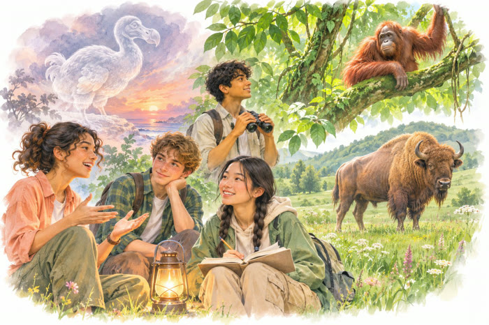

Listen to the text
Speed:

The history of wild animals has three kinds of stories. Some of them are finished. Some are being written now. And a few have a happy ending. Gone. The dodo was a large bird that couldn't fly. It lived on the island of Mauritius, where it had no enemies. Then sailors arrived, and with them came dogs, pigs and rats. In less than a hundred years not a single dodo was left. The same happened to the Steller's sea cow, a gentle sea creature as long as a bus. It was discovered in 1741 and became extinct only twenty-seven years later. Nobody will ever see these animals again. Almost gone. Orangutans live only on two islands in Asia. Their name means "person of the forest", and the forest is exactly what they are losing. Deforestation destroys their habitat: trees are cut down for wood and for palm oil plantations. Rhinos have another problem, which they carry on their noses. Their horn is sold for huge money, although it is made of the same material as our nails. Elephants are killed for ivory. An elephant mother carries her baby for almost two years, so the herds can't grow as fast as hunters shoot. Coming back. A hundred years ago the European bison had disappeared from the wild. Only about fifty animals were left in zoos. Scientists started a breeding programme, and little by little the bison were returned to the forests. Today several thousand of them live in freedom again, including herds in Ukraine. The giant panda, the symbol of rare animals, is also doing better: thanks to the protection of bamboo forests its numbers are slowly growing. What is the difference between the second and the third story? Only people. The same species that destroys can also protect. A breed of dogs can be created in a few decades, but a wild species that is lost can never be made again. In the Natural History Museum there is a model of the dodo behind glass. Children laugh at its funny beak. I always feel a little ashamed in front of it. I hope that my grandchildren will see orangutans in a forest, not behind glass.
Tap any sentence to hear it again.
Сподобалось? На сайті ще більше матеріалів для вчителів!
Reader, презентації, ігри, діагностичні та контрольні роботи до підручників 1-11 класів.
Перейти на сайт materials.allaenglish.com